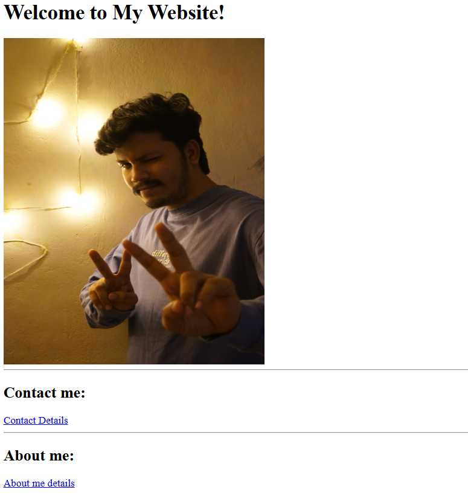
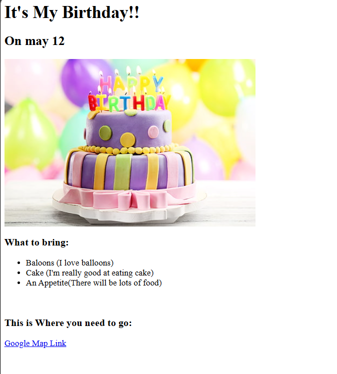

I'm Vijay karthick
I'm a web Developer
My list of projects
Screenshots of my project:
Project -1: About me Project

Project -2: Movie Ranking Project
Project -3: Birthday Invite project

Links for the project Samples:
-
About me project
-
Animals project
-
Birthday Invite Project
-
Movie Ranking Project
Contact me:
Contact